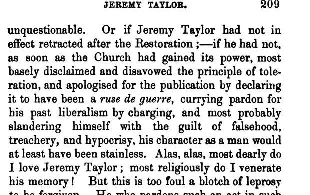

“A ruse de guerre” (vol. I, p. 209)
English: London 1853, vol. I, p. 209, scan; a note on Taylor’s Liberty of Prophesying. Highlighted: Lecky’s quotation.

[p. 208, OCR:] O! had this work been published when Charles I., Archbishop Laud, whose chaplain Taylor was, and the other Star Chamber inquisitors, were sentencing Prynne, Bastwick, Leighton, and others, to punishments that have left a brand-mark on the Church of England, the sophistry might have been forgiven for the sake of the motive, which would then have been unquestionable.
Or if Jeremy Taylor had not in effect retracted after the Restoration;—if he had not, as soon as the Church had gained its power, most basely disclaimed and disavowed the principle of toleration, and apologised for the publication by declaring it to have been a ruse de guerre, currying pardon for his past liberalism by charging, and most probably slandering himself with the guilt of falsehood, treachery, and hypocrisy, his character as a man would at least have been stainless. Alas, alas, most dearly do I love Jeremy Taylor; most religiously do I venerate his memory! But this is too foul a blotch of leprosy to be forgiven. He who pardons such an act in such a man partakes of its guilt.
Lecky’s differences: “the Church had gained power” for “gained its power”, and “almost stainless” for “at least have been stainless”, which turns Coleridge’s “Taylor would have been without stain” into “Taylor was nearly without stain”.
Backlinks
Every place in Rationalism in Europe that links to this page (generated automatically when the site is built).
- Chapter IV, Part II: note 95